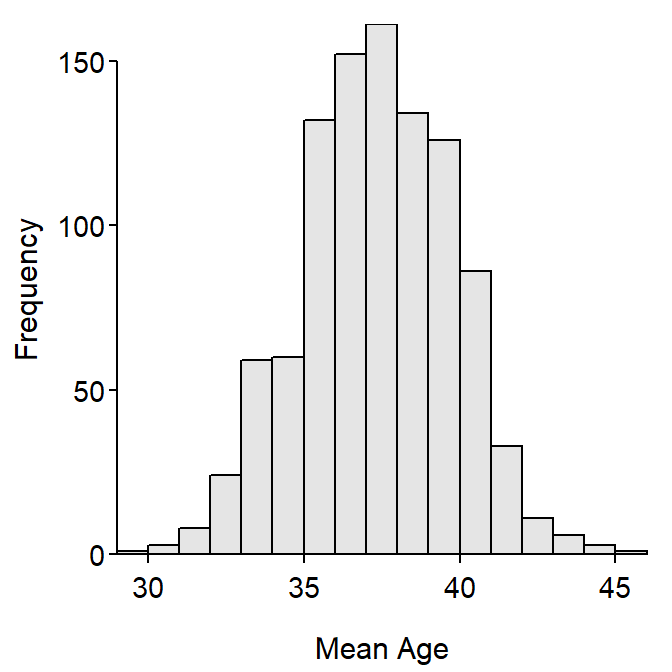

Scenario
Suppose that you have been hired to work for a company that makes “cheesheads” and that your first task is to market cheesheads to residents of Ashland and Bayfield counties (WI). Further suppose that to effectively market cheeseheads you need to know the mean age and percentage of males for everybody in Ashland and Bayfield counties.
- Is it possible to know the mean age and percentage of males for everybody in Ashland and Bayfield counties? Explain why or why not?
- If you said that it was “not possible,” then is it reasonable, given financial and physical constraints, to know these two values? Explain why or why not?
- If you said that it was “not possible” and it also was “not reasonable,” then what should be done to get some sort of understanding of these two values? How would you go about doing that?
Please don’t go on until we have discussed these questions as a class.
Note: The following code is used to produce a “live” example for class. The meaning of this code will be explained later. For now, we simply want the results that are produced. Type (better yet, copy-and-paste) the code exactly as shown in each grey box and attempt to answer the follow-up questions.
Obtain a Random Sample of Residents from Ashland-Bayfield Counties
library(NCStats)
( samA <- srsdf(ABCens90,n=100) )
- Are the individuals (i.e., each row) in your sample identical? Why or why not?
- Write a brief conclusion about the ages of individuals in your sample.
- Was your conclusion “easy” or “hard” to write? Why? What could you do to make writing your conclusions easier?
Please don’t go on until we have discussed these questions as a class.
Summarize Your Sample
Summarize(~age,data=samA,digits=1)
- Write a brief conclusion about the ages of individuals in your sample.
- Was it easier to write your conclusions here than previously? Why or why not?
Please don’t go on until we have discussed these questions as a class.
Obtain and Summarize a Second Random Sample
( samB <- srsdf(ABCens90,n=100) )
Summarize(~age,data=samB,digits=1)
- Were the mean ages from the two samples identical?
- Are your results (about whether the mean ages were identical between samples) typical or expected? Why or why not?
Please don’t go on until we have discussed these questions as a class.
Compare Your Results to the Truth
Summarize(~age,data=ABCens90,digits=1)
- Did your sample mean ages exactly equal this true value for the entire population?
- Are your results (about whether the summaries from your samples matched the summary from the population) typical or expected? Why or why not?
Please don’t go on until we have discussed these questions as a class.
Examine Many Random Samples of Residents from Ashland-Bayfield Counties
